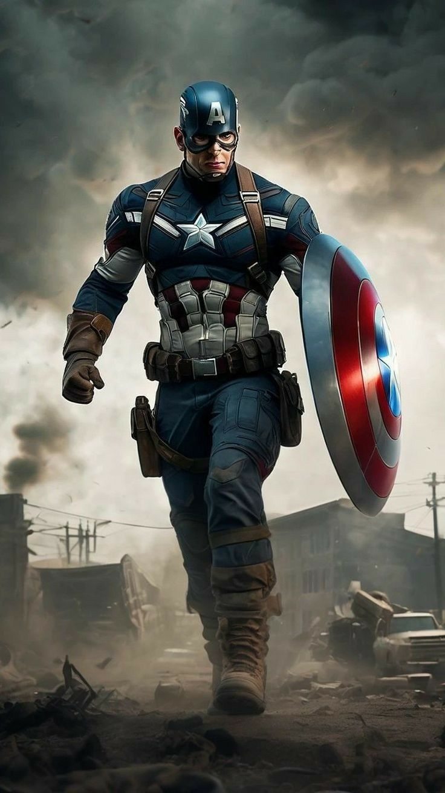

CAPTAIN AMERICA
Steve Rogers begins his journey as a patriotic symbol, donning a costume inspired by the American flag and wielding an indestructible shield. He becomes Captain America, a super-soldier dedicated to defending the ideals of freedom and justice. During the war, he fights against the Axis powers and his arch-nemesis, the Red Skull.
After the war, Captain America becomes a man out of time, as he is discovered frozen in ice and revived in the modern era by the Avengers. His storylines often explore themes of heroism, morality, and the clash between his 1940s values and contemporary society.